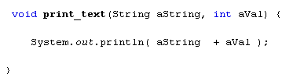
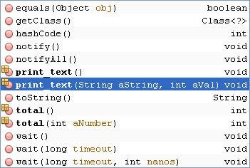
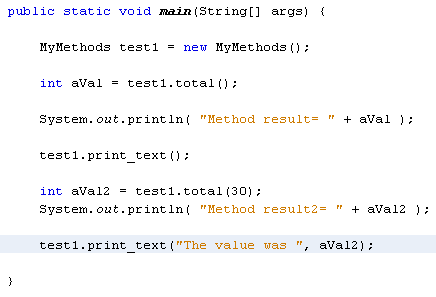
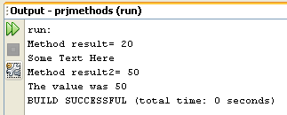

Passing Multiple Values to Methods
You can pass more than one value over to your methods. Add the following method to your MyMethods class:

All this method does is to print something out. Between the round brackets of the method name we have two values, a String variable called aString and an int variable called aVal. When we call this method, we need a string first and then a number. Try to do it the other way round and you'll get error messages.
Go back to your TestMethods class and make the following call to the method:
test1.print_text( "The value was ", aVal2 );
Again, the print_text method should show up on the NetBeans popup list.

The values (parameters) that we specified are between the round brackets, along with the return method, void.
But your main coding window should now look like this:

The two values that we are passing over are separated by a comma. Notice that the value inside of aVal2 is being passed over. However, the variable name inside of the round brackets of print_text is called aVal. Although the two variable names are different, this doesn't matter. What you are doing is passing values over to the method. So the variable aVal will end up with the same value as aVal2.
If you run your programme now, you should see the following in the Output window:

We'll leave methods there for the time being. We'll be writing more methods as we go along, so you should get plenty of practice. The next section is about Classes - Object Oriented Programming.